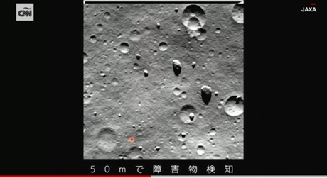
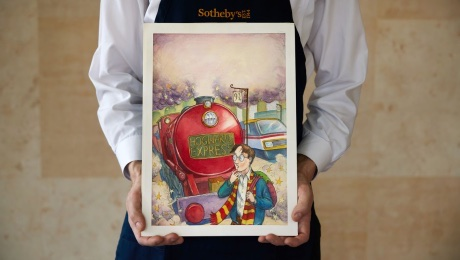

Noticias Del Mundo
ANÁLISIS | DONALD TRUMP
El expresidente Donald Trump y el director ejecutivo de Tesla y propietario de X, Elon Musk, mantuvieron una conversación amistosa este lunes en X después de que su entrevista se retrasara más de 40 minutos debido a dificultades técnicas.
El Moon Sniper de Japón sigue desconcertando a los expertos. El módulo de
alunizaje
compartió imágenes de su último "día" lunar. El módulo de alunizaje japonés
"Moon
Sniper" volvió a desafiar los pronósticos, sobreviviendo a otra larga y gélida noche
lunar a
pesar de no haber sido diseñado para soportar condiciones tan duras, según la Agencia de
Exploración Aeroespacial de Japón.
Las temperaturas durante la noche lunar pueden descender hasta los 208 °F bajo cero (133
°C bajo
cero), según la NASA. Y no se esperaba que Moon Sniper resistiera siquiera una noche
lunar, que
es un periodo de oscuridad en la Luna que dura unas dos semanas.
El vehículo robótico, también conocido como SLIM (Smart Lander for Investigating Moon),
aterrizó
en la superficie lunar el 19 de enero. La histórica hazaña convirtió a Japón en el
tercer país
de este siglo, y el quinto de la historia, en alunizar. La nave aterrizó cerca del
cráter
Shioli, situado a unos 322 kilómetros al sur del Mar de la Tranquilidad, una región
cercana al
ecuador lunar, donde el Apolo 11 alunizó por primera vez.

Un mes después de que ocho pasajeros de Norwegian Cruise Line
quedaran varados en África.
cuando su barco zarpó sin ellos porque tardaban en regresar, una pareja estadounidense
—de
84 y 81 años— también fue abandonada por la compañía de cruceros en España.
Richard y Claudene Gordon, de Salt Lake City, Utah, se encontraban en un crucero por el
Mediterráneo a bordo del Norwegian Viva con familiares y amigos y esperaban celebrar el
85
cumpleaños de Richard a finales de esta semana.
Este lunes, mientras el barco estaba atracado en Motril (España), la pareja hizo una
excursión independiente a la histórica ciudad de Granada, que no fue organizada por la
compañía de cruceros. A su regreso, el autobús sufrió un retraso de una hora debido a
una
tormenta, según explicó Richard Gordon a CNN por teléfono.

La novela de J.K. Rowling de 1997
"Harry Potter y la piedra filosofal"
fue el comienzo de lo que se convertiría en un fenómeno mundial. Ahora sale a la
venta la
ilustración original de la primera edición del libro.
Se espera que se venda por hasta US$ 600.000 en una subasta que se llevará a cabo el
próximo
mes, el valor de preventa más alto jamás otorgado a un artículo relacionado con Harry
Potter,
según la casa de subastas Sotheby's.

CARRUSEL DE IMAGENES